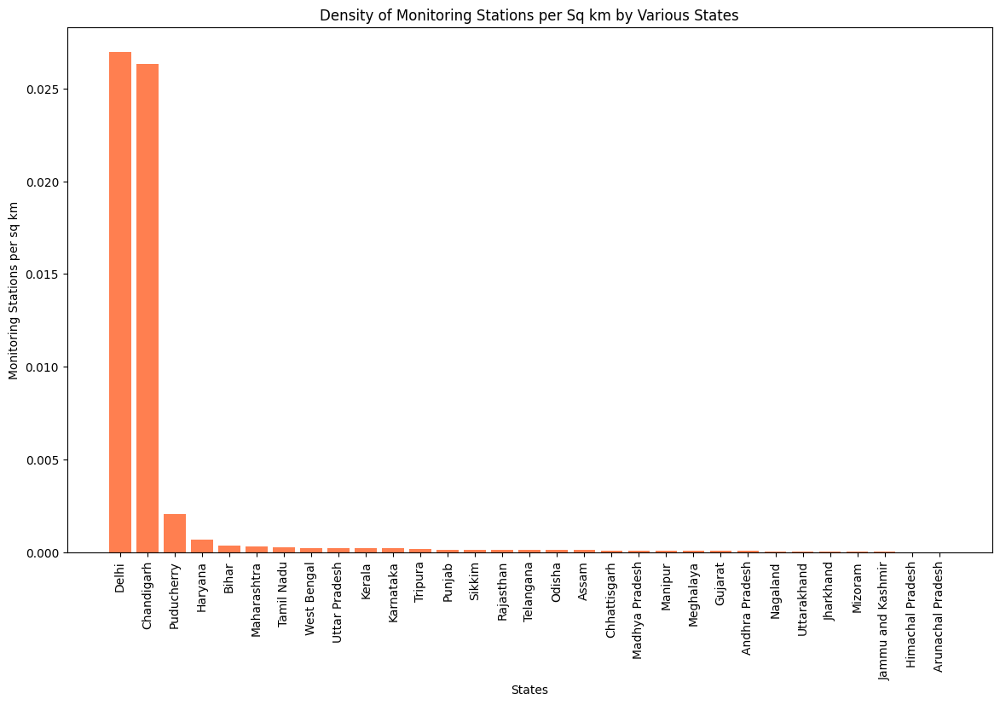
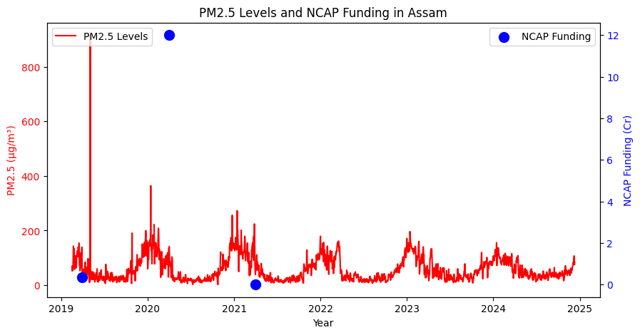

import pandas as pd
import matplotlib.pyplot as plt
import seaborn as sns
# Load the datasets
state_data = pd.read_csv('State_data.csv')
ncap_funding = pd.read_csv('NCAP_Funding.csv')
pm25_data = pd.read_csv('Data.csv')Area Based
#Ans 1
state_data.rename(columns={"State": "state"}, inplace=True)
df_pollution_clean = pm25_data.dropna(subset=["PM2.5"])
pm25_avg_per_state = df_pollution_clean.groupby("state")["PM2.5"].mean().reset_index()
df_merged = pd.merge(pm25_avg_per_state,state_data, on='state')
df_merged["PM2.5 per sq km"] = df_merged["PM2.5"] / df_merged["Area (km2)"]
df_merged_sorted = df_merged.sort_values(by="PM2.5 per sq km", ascending=False)
most_polluted_state = df_merged_sorted.iloc[0]["state"]
print(f"State with the highest PM2.5 concentration per square kilometer: {most_polluted_state}")
plt.figure(figsize=(14, 8))
plt.bar(df_merged_sorted["state"], df_merged_sorted["PM2.5 per sq km"], color='red')
plt.xticks(rotation=90)
plt.xlabel("States")
plt.ylabel("PM2.5 Concentration per sq km")
plt.title("PM2.5 Concentration per Sq km by Various States")
plt.grid(True, linestyle="--", alpha=0.5)
plt.show()State with the highest PM2.5 concentration per square kilometer: Chandigarh
#Ans 2
state_data.rename(columns={"State": "state"}, inplace=True)
station_count_per_state = pm25_data.groupby("state")["station"].nunique().reset_index()
station_count_per_state.rename(columns={"station": "Number of Stations"}, inplace=True)
df_station_density = pd.merge(station_count_per_state,state_data,on="state")
df_station_density["Stations per sq km"] = df_station_density["Number of Stations"] / df_station_density["Area (km2)"]
df_station_density_sorted = df_station_density.sort_values(by="Stations per sq km", ascending=False)
most_dense_state = df_station_density_sorted.iloc[0]["state"]
print(f"State with the highest density of monitoring stations: {most_dense_state}")
plt.figure(figsize=(14, 8))
plt.bar(df_station_density_sorted["state"], df_station_density_sorted["Stations per sq km"], color='coral')
plt.xticks(rotation=90)
plt.xlabel("States")
plt.ylabel("Monitoring Stations per sq km")
plt.title("Density of Monitoring Stations per Sq km by Various States")
plt.show()State with the highest density of monitoring stations: Delhi#Ans 3
state_data = pd.read_csv("State_data.csv")
data_pollution = pd.read_csv("Data.csv")
data_pollution["Timestamp"] = pd.to_datetime(data_pollution["Timestamp"], errors='coerce')
data_2021 = data_pollution[(data_pollution["Timestamp"].dt.year == 2021) &
(data_pollution["state"].isin(["Maharashtra", "Madhya Pradesh"]))]
pm25_avg = data_2021.groupby("state")["PM2.5"].mean().reset_index()
pop_area_data = state_data[state_data["State"].isin(["Maharashtra", "Madhya Pradesh"])][["State", "Population", "Area (km2)"]]
pop_area_data["Population Density"] = pop_area_data["Population"] / pop_area_data["Area (km2)"]
analysis_data = pop_area_data.merge(pm25_avg, left_on="State", right_on="state").drop(columns=["state"])
print(analysis_data)
fig, ax1 = plt.subplots(figsize=(8, 5))
ax1.bar(analysis_data["State"], analysis_data["Population Density"], color='skyblue', label="Population Density")
ax1.set_ylabel("Population Density (people per sq km)", color='blue')
ax1.tick_params(axis='y', labelcolor='blue')
ax2 = ax1.twinx()
ax2.plot(analysis_data["State"], analysis_data["PM2.5"], color='red', marker='o', linestyle='-', label="PM2.5 Levels")
ax2.set_ylabel("Average PM2.5 (µg/m³)", color='red')
ax2.tick_params(axis='y', labelcolor='red')
plt.title("Population Density vs PM2.5 Levels (2021)")
fig.tight_layout()
plt.show() State Population Area (km2) Population Density PM2.5
0 Maharashtra 112374333 307713 365.192023 46.440044
1 Madhya Pradesh 72626809 308252 235.608557 47.095952
Funding Based
#Ans 1
ncap_funding['Amount released during FY 2021-22'] = pd.to_numeric(ncap_funding['Amount released during FY 2021-22'], errors='coerce')
funded_states_2021 = ncap_funding[ncap_funding['Amount released during FY 2021-22'] > 0]['State'].unique()
funded_states_data = data[data['state'].isin(funded_states_2021)]
non_funded_states_data = data[~data['state'].isin(funded_states_2021)]
avg_pm25_funded = funded_states_data['PM2.5'].mean()
avg_pm25_non_funded = non_funded_states_data['PM2.5'].mean()
print(f"Average PM2.5 for states that received NCAP funding in 2021: {avg_pm25_funded}")
print(f"Average PM2.5 for states that did not receive NCAP funding in 2021: {avg_pm25_non_funded}")Average PM2.5 for states that received NCAP funding in 2021: 62.22735848700783
Average PM2.5 for states that did not receive NCAP funding in 2021: 52.65062674226705#Ans 2
assam_pm25_data = pm25_data[pm25_data["state"] == "Assam"].copy()
assam_pm25_data["Timestamp"] = pd.to_datetime(assam_pm25_data["Timestamp"])
assam_pm25_trend = assam_pm25_data.groupby("Timestamp")["PM2.5"].mean().reset_index()
assam_funding_data = ncap_funding[ncap_funding["State"] == "Assam"].copy()
funding_columns = [
"Amount released during FY 2019-20",
"Amount released during FY 2020-21",
"Amount released during FY 2021-22",
"Total fund released",
]
for col in funding_columns:
assam_funding_data[col] = pd.to_numeric(assam_funding_data[col], errors="coerce")
assam_funding_summary = assam_funding_data[funding_columns].sum().reset_index()
assam_funding_summary.columns = ["Year", "Funding Amount"]
year_mapping = {
"Amount released during FY 2019-20": "2019-04-01",
"Amount released during FY 2020-21": "2020-04-01",
"Amount released during FY 2021-22": "2021-04-01",
}
assam_funding_summary["Year"] = assam_funding_summary["Year"].map(year_mapping)
assam_funding_summary.dropna(inplace=True)
assam_funding_summary["Year"] = pd.to_datetime(assam_funding_summary["Year"])
fig, ax1 = plt.subplots(figsize=(10, 5))
ax1.plot(assam_pm25_trend["Timestamp"], assam_pm25_trend["PM2.5"], color="red", label="PM2.5 Levels")
ax1.set_xlabel("Year")
ax1.set_ylabel("PM2.5 (µg/m³)", color="red")
ax1.tick_params(axis="y", labelcolor="red")
ax2 = ax1.twinx()
ax2.scatter(assam_funding_summary["Year"], assam_funding_summary["Funding Amount"], color="blue", label="NCAP Funding", marker="o", s=100)
ax2.set_ylabel("NCAP Funding (Cr)", color="blue")
ax2.tick_params(axis="y", labelcolor="blue")
plt.title("PM2.5 Levels and NCAP Funding in Assam")
ax1.legend(loc="upper left")
ax2.legend(loc="upper right")
plt.show()
NCAP_Funding of Assam has been increased in the year 2020-2021 and clearly we can see that in that period the value of PM_2.5 has also increased indicating that the Quality of Air has Decreased. Therefore, increment of the financing didn’t lead to noticeable improvements in air quality.
#Ans 3
state_data.columns = state_data.columns.str.strip()
ncap_funding.columns = ncap_funding.columns.str.strip()
# Group NCAP funding by state and calculate the sum of funds released
funds_by_state = ncap_funding.groupby('State')['Total fund released'].sum().reset_index()
# Merge the funds data with state area data
merged_data = pd.merge(state_data, funds_by_state, on='State', how='inner')
# Create scatter plot for area vs total fund released
plt.figure(figsize=(12,8))
sns.scatterplot(x=merged_data['Area (km2)'], y=merged_data['Total fund released'],
hue=merged_data['State'], palette='tab20', s=100)
# Customize the plot
plt.xlabel('Area (km²)')
plt.ylabel('Total NCAP Funding Released (in Crores INR)')
plt.title('Area vs Total NCAP Funding Released by State')
plt.legend(loc='center left', bbox_to_anchor=(1, 0.5), title='States')
# Show the plot
plt.tight_layout()
plt.show()